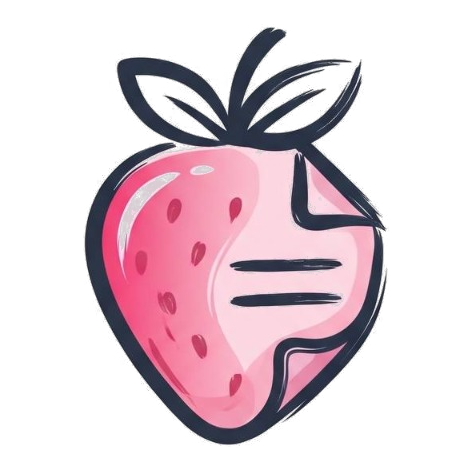

Every tool you need to work with PDFs
(pdf tool box, but lovely)
Tool Name
Description
or drop files here
0 Pages Removed
Continue to:

(pdf tool box, but lovely)
Description
or drop files here
Loading pages in browser...
100% Private in your browser
This document is encrypted. Please enter the password to view and edit pages.